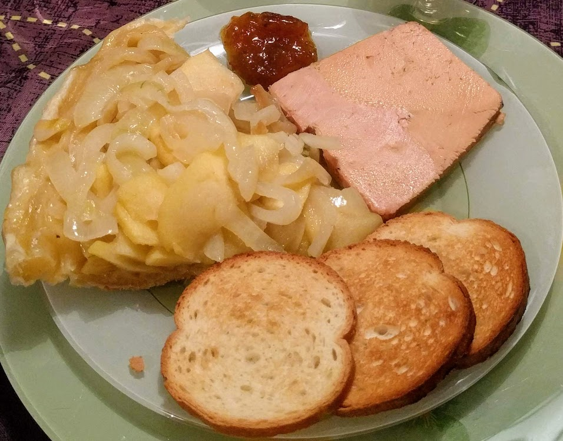

Tarte Tatin pommes-oignons

Ici avec du foie gras (cf. variante ci-dessous)
Pour 4 personnes (ou plus s'il on sert ça en entrée) :
- 2 grosses pommes
- Un gros oignon (ou 2 petits)
- Une pâte feuilletée
- Huile d'olive, beurre
- Sel, poivre
- Faire revenir les oignons coupés en lamelles dans une noisette de beurre et un peu d'huile d'olive. Ajouter les pommes coupées en lamelles pas trop fines, saler, poivrer. Laisser cuire 5 minutes le temps que les pommes soient bien fondantes.
- Couper un ou des disques de taille voulue dans la pâte feuilletée. Préchauffer le four à 180°C.
- Disposer les pommes et les oignons sur un (ou des) moule(s) à tarte, disposer par-dessus le(s) disque(s) de pâte.
- Piquer la pâte, enfourner 20 minutes.
- Servir chaud, avec une salade.
Remarque : avec les quantités données, une pâte feuilletée, c'est trop, il va en rester un peu. On peut faire des jolis dessins avec le reste, par exemple.
Variante : pour rendre cette recette significantivement plus stylée, on peut couper un petit bloc de foie gras en tranches fines, les disposer sur le dessus de la pâte juste après la cuisson, et enfourner à nouveau pendant 3-4 minutes pour que ça fonde un peu.